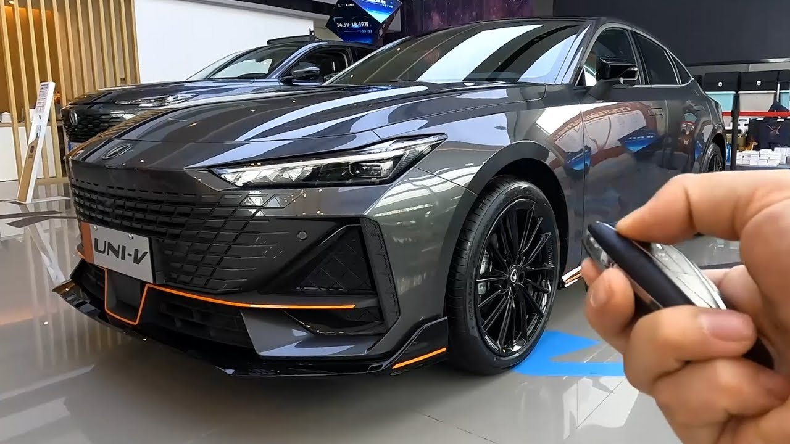

Changan Uni-V, 2022-ci ildən istehsal olunan sport üslubunda sedan modelidir. 1.5 litrlik turbo mühərriki 181 at gücü verir və 7-pilləli DCT sürətlər qutusu ilə təchiz olunub. Aerodinamik dizaynı, texnoloji salonu və arxa spoyleri ilə həm idman, həm də müasir görünüşü birləşdirir.
← Geri dön<< /a>